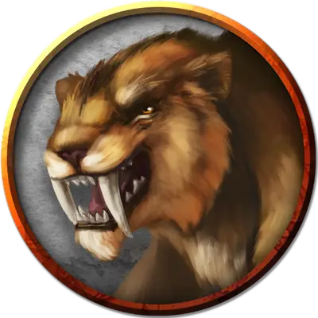

Бронированный саблезубый тигр
Armored Saber-Toothed Tiger
Большой Зверь, без мировоззрения

Класс Доспеха 17 (полулаты)
Хиты 84 (7к10 + 46)
Скорость 40 футов
| мод | спас | ||
|---|---|---|---|
| СИЛ | 18 | +4 | +4 |
| ЛОВ | 14 | +2 | +2 |
| ТЕЛ | 15 | +2 | +2 |
| мод | спас | ||
|---|---|---|---|
| ИНТ | 3 | −4 | −4 |
| МДР | 12 | +1 | +1 |
| ХАР | 8 | −1 | −1 |
Навыки Восприятие +3, Скрытность +6
Чувства пассивное Восприятие 13
Опасность 3 (700 опыта)
Бонус мастерства +2
Особенности
Тонкий нюх. Тигр совершает с преимуществом проверки Мудрости (Восприятие), полагающиеся на обоняние.
Наскок. Если тигр переместится как минимум на 20 футов по прямой к существу, а затем попадает по нему атакой Когтем, цель должна преуспеть в спасброске Силы Сл 14, иначе будет сбита с ног. Если цель сбита с ног, тигр может бонусным действием совершить по ней одну атаку Укусом.
Действия
Укус. Рукопашная атака оружием: +6 к попаданию, досягаемость 5 футов, одна цель. Попадание: Колющий урон 10 (1к10 + 5).
Коготь. Рукопашная атака оружием: +6 к попаданию, досягаемость 5 футов, одна цель. Попадание: Рубящий урон 12 (2к6 + 5).
Описание
Данный саблезубый тигр ван Рихтена натренирован охотиться на злых вистани. Тигр узнаёт вистани по запаху и, в меньшей степени, по ярким нарядам, которые они носят.